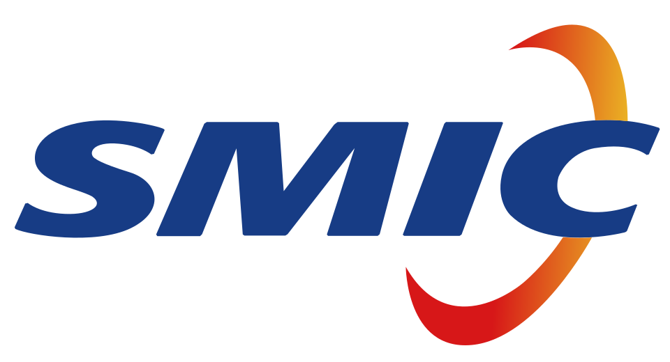

Semiconductor Manufacturing International Corporation
SMIC(Semiconductor Manufacturing International Corporation)는 중화인민공화국의 순수 반도체 파운드리 기업으로, 부분적으로 국영 기업으로 상장되어 있다. 중국 최대의 계약 칩 제조사이다.
최종 업데이트

Semiconductor Manufacturing International Corporation는 어떤 브랜드인가
SMIC는 중화인민공화국 최대의 계약 칩 제조사로, 집적회로 제조 서비스를 제공하는 순수 파운드리 기업이다. 본사는 상하이시에 있으며 케이맨 제도에 법인이 있다.
중국 본토 전역에 웨이퍼 제조 현장을 두고 있으며, 미국, 이탈리아, 일본, 대만에 사무소를, 홍콩에 대표 사무소를 두고 있다. 2024년 1분기에 세계 파운드리 시장에서 TSMC, 삼성전자에 이어 3위를 차지했다.
2020년 9월 미국 상무부가 SMIC를 블랙리스트로 지정해 거래를 위해서는 특별 허가를 받도록 했다. 중국 정부는 '반도체 굴기 정책'을 통해 반도체 산업을 육성했다.
Semiconductor Manufacturing International Corporation는 어떻게 시작되고 성장했나
SMIC는 2000년에 설립되었고, 창업자 중 한 명은 한때 TSMC에서 근무했던 Zhang Rujing이다. 2004년 홍콩 증권 거래소에 상장되었으며 공모 가격은 주당 HK$2.69였다.
2010년부터 손실을 흑자로 전환하기 시작했다. 2014년 12월에는 300억 위안의 산업자금을 지원받았고, 심천 웨이퍼 공장이 12월 말 공식 가동에 들어갔다.
2020년대 초에는 중국 국영 반도체 펀드와의 합작 투자를 통해 중국 전역에 4개의 28nm 공정 공장을 건설하며 확장했다.
Semiconductor Manufacturing International Corporation의 브랜드 아이덴티티는 무엇인가
중국 최대의 계약 칩 제조사로, 부분적으로 국영 기업으로 상장된 순수 파운드리이며 미국 상무부의 블랙리스트에 오른 이력이 있다.
Semiconductor Manufacturing International Corporation의 대표 제품과 서비스는 무엇인가
SMIC는 350nm부터 7nm 공정 기술까지 집적회로(IC) 제조 서비스를 제공한다. 0.35 마이크론에서 14 나노미터에 이르는 웨이퍼 파운드리 및 기술 서비스를 공급하며, 제품군에는 로직 칩, 혼합 신호/RF 트랜시버 칩, 고전압 칩, 시스템 칩, 플래시 메모리 칩, EEPROM 칩, 이미지 센서 칩, LCoS 마이크로 디스플레이 칩이 포함된다.
2022년에는 EUV 없이 DUV 장비로 7nm 공정을 개발했고, 이후 5nm 공정도 개발한 것으로 알려졌다. 주목할 만한 고객으로는 화웨이, 퀄컴, 브로드컴, 텍사스 인스트루먼츠가 있다.
Semiconductor Manufacturing International Corporation는 지금 어떤 상태인가
다탕 텔레콤 그룹(Datang Telecom Group)과 중국 집적 회로 산업 투자 기금이 SMIC의 주요 주주이다. 2020년 9월 미국의 제재 이후 핵심 기술 인력의 이탈 현상이 발생했고, 2023년에는 화웨이가 SMIC의 7nm 공정 칩을 탑재한 스마트폰을 출시해 논란이 일었다.
7nm 공정과 관련해서는 제품 설계와 성능이 TSMC의 제품과 유사하다는 이유로 기술 도용 가능성이 제기되었다.
Semiconductor Manufacturing International Corporation 로고는 어떻게 변해왔나
자주 묻는 질문
Semiconductor Manufacturing International Corporation는 언제 설립되었나요?
Semiconductor Manufacturing International Corporation는 2000년 설립되었습니다.
Semiconductor Manufacturing International Corporation는 어떤 산업의 브랜드인가요?
Semiconductor Manufacturing International Corporation는 기술·전자 분야의 브랜드입니다.
Semiconductor Manufacturing International Corporation의 브랜드 아이덴티티는 무엇인가요?
중국 최대의 계약 칩 제조사로, 부분적으로 국영 기업으로 상장된 순수 파운드리이며 미국 상무부의 블랙리스트에 오른 이력이 있다.
Semiconductor Manufacturing International Corporation의 대표 제품은 무엇인가요?
SMIC는 350nm부터 7nm 공정 기술까지 집적회로(IC) 제조 서비스를 제공한다.
Semiconductor Manufacturing International Corporation는 현재 어떤 상태인가요?
다탕 텔레콤 그룹(Datang Telecom Group)과 중국 집적 회로 산업 투자 기금이 SMIC의 주요 주주이다.
Semiconductor Manufacturing International Corporation의 창업자는 누구인가요?
Semiconductor Manufacturing International Corporation의 창업자는 Zhang Rujing입니다(위키데이터 기준).
Semiconductor Manufacturing International Corporation의 본사는 어디에 있나요?
Semiconductor Manufacturing International Corporation의 본사는 상하이시에 있습니다(위키데이터 기준).
출처와 검증
Semiconductor Manufacturing International Corporation 관련 참고: 공식 웹사이트 · 위키데이터 Q648533 · 한국어 위키백과 · 영어 위키백과. 브랜드명은 한글과 원어를 함께 표기하되 데이터에 없는 표기는 만들지 않습니다. 기원 국가·설립연도는 검수된 정의문에서 확인된 값을 우선하고, 없을 때만 공식 웹사이트 URL이 일치하는 위키데이터 개체의 값을 씁니다. 탄생일의 월·일은 위키데이터, 위키백과 정보상자, 본문 가운데 같은 연월로 확인되는 값만 싣고, 출처끼리 다르면 싣지 않습니다. 위키데이터 값은 2026-11-14 기준입니다.